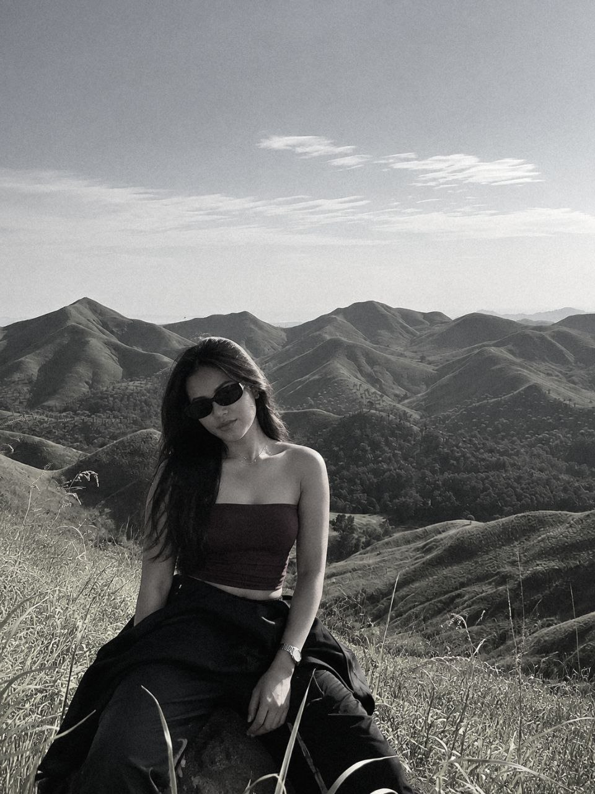

PHOTOGRAPHY · VISUAL STORIES
Hello, I'm
Fe Butlig.
Finding beauty in the little things.
Keeping moments through my lens.
Chasing horizons, capturing the beauty of every view, and finding magic in the places we often overlook..

PORTRAITS / PERSONAL
A little about me.
I’m Fe Butlig, a BSCS 3A student with a love for capturing meaningful moments and seeing ordinary scenes from a creative point of view.
Finding beauty beyond the ordinary, where every sunset paints a story, every landscape holds a _feeling, and every little detail becomes a memory worth keeping..
This portfolio is a growing collection of moments that inspire me. Every frame is a chance to notice something worth remembering.
Through my lens.
A few captured moments, each with its own story.
More frames will find their place here.
A PERSONAL PHOTO COLLECTION — 2026
Have a moment
worth capturing?
Thanks for taking the time to explore my little corner of photography. I’d love to connect and share more creative ideas.